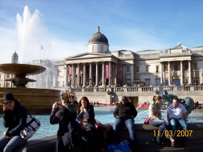
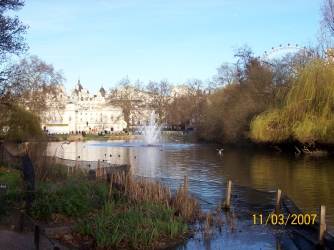
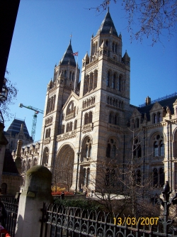
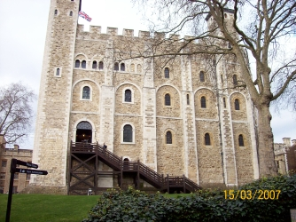
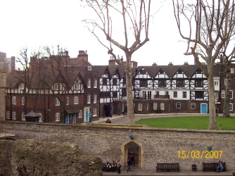
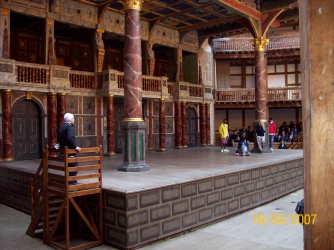
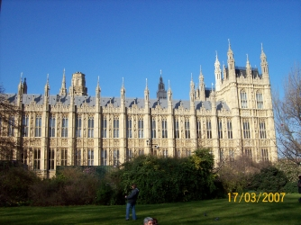
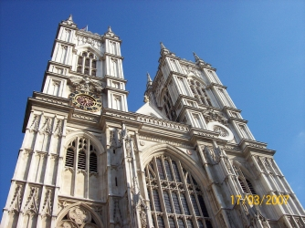
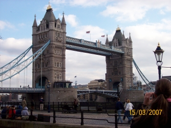

My
stay in London
We
went to London for a week, from 11th to 18th of March, for a stay.
the first
we saw was our school: it was thought expressly for foreign students.
It had
3 floors, and our classroom was on the 3rd.
Every
morning, from Monday to Friday, we had lessons with Kathy, a cheerful
young woman who never got us bored! She taught us something about
pronunciation and grammar using games that involved us very much. We
think that she was great and we liked her a lot!
After
the school, we went to the discovery of London with our teachers, Mrs
Casanova and Mr McDaniel.
On
Sunday, we went to Trafalgar Square, National Gallery, St James’s
Park and
Buckingham Palace. I think that Trafalgar Square was the best part of
the day because of its monuments.
 
Trafalgar Square
St James's Park
On Monday, we went in
Wimbledon
with Kathy: a wonderful explosions of colours and shops that will be
difficult to forget! Then, we went to St Paul’s Cathedral, that I
liked a lot, and the Museum of London.
On Tuesday, we went to
the
Natural History Museum, which in my opinion was the best Museum of
all, because you can play with the expositions, and to the Science
Museum, where the history of the Earth was displayed .
 Natural History Museum
On Wednesday,
we
went to the Royal Observatory Museum, where we saw the Greenwich
Meridian and the Maritime Museum.
On Thursday we went to the Tower of
London, where we saw ancient weapons, armours, the Crown Jewels and
the Queen’s guards. We stayed there all afternoon because of the
innumerable things to see!
 
Tower of London
On Friday, we went to the Globe Theatre,
that I imagined like that, beautiful and exciting, Southwark
Cathedral and Clink Prison, that in my opinion was the worst place
where we went to because it wasn’t interesting.
 the Globe Theatre
Then, on
Saturday,
we went to the British Museum where we saw the Egyptian, Greek and
Roman archaeological finds. We also went to Covent Garden, the House
of Parliament and Westminster Abbey. I had never thought that the Big
Ben was so beautiful and exciting… wow!
 
House of Parliament
Westminster Abbey
And then, on our
last day, we went to the Tower Bridge, one of the most important
landmarks in London: it was great!
 Tower Bridge
During
all the week, me and my room-mate Silvia stayed in a family, Choudhury,
from Bangladesh. There were 4 people: Mrs Akba, Mr Shahid and two
daughters, Tasmin and Zahraa. Akba was very kind and pleasant. We liked
her very much. Tasmin and Zahraa were very kind, but we didn’t
see them
very much because they were always busy. It was the same thing for Mr
Choudhury. In
my opinion, this was a great family, that made us feel like at our
home:
the food was always delicious and our room was very big and we also had
a bathroom only for us!
The
weather was fantastic, always sunny and we had fun every day!
I
liked, and I like, very much London, I really wish I could return
there one day. It has been a wonderful experience.
Denise
Guerra 3ae